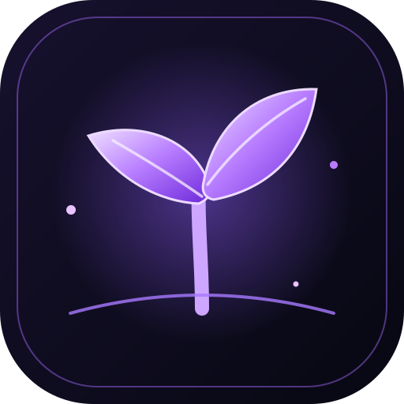

Jeden moment dziennie
Krótki wpis do 150 znaków, emocja i tagi. Minimum tarcia, maksimum znaczenia.

Jeden Moment.Jedna dobra rzecz dziennie. Tylko tyle. Zapisuj drobne momenty, do których kiedyś zechcesz wrócić, i patrz, jak wyrasta z nich Twój osobisty ogród wspomnień.
DZISIAJ JEST DOBRY DZIEŃ
Nie musi być wielkie. Wystarczy, że było ważne dla Ciebie.
Poranna kawa w ciszy i promienie słońca na kuchennym stole.
Małe chwile potrafią zostawić wielki ślad.
Łatwo zapamiętać to, co poszło nie tak. Trudniej zatrzymać drobny uśmiech, spokojny wieczór czy czyjąś życzliwość. Jeden Moment daje tym chwilom własne miejsce.
Możesz edytować dzisiejszy wpis, ale nie dodasz drugiego. To nie wyścig. To rytuał uważności.
Demonstracja strony zapisuje wpis tylko w tej przeglądarce.
Proste funkcje, które pomagają wracać do chwil bez zamieniania wdzięczności w kolejne zadanie do odhaczenia.
Krótki wpis do 150 znaków, emocja i tagi. Minimum tarcia, maksimum znaczenia.
Obserwuj dni, w których zatrzymałeś chwilę. To przypomnienie, nie ranking.
Każdy zapis rozwija Twoją roślinę. Od nasionka do drzewa pełnego wspomnień.
Zostaw wiadomość dla przyszłego siebie i wróć do niej w odpowiednim momencie.
Wróć do tego, co zapisałeś tydzień, miesiąc lub rok temu.
Zamień zdanie w estetyczną kartę. Zachowaj je dla siebie lub podziel się nim.
Nie chodzi o liczbę wpisów. Chodzi o to, że po czasie możesz zobaczyć, ile dobrego naprawdę się wydarzyło.
Każda wielka zmiana zaczyna się od małego kroku. Zapisz pierwszy moment, by dać mu początek.
Każdy kwadracik symbolizuje dzień. Kolory pokazują momenty, które zachowałeś.
Projekt aplikacji zakłada lokalne przechowywanie wpisów, bez konta i bez wysyłania dziennika na serwer.
Wpisy pozostają na Twoim urządzeniu.
Nie musisz tworzyć profilu ani podawać maila.
Opcjonalna ochrona dostępu do dziennika.
Możliwość zachowania własnej kopii wpisów.
Pobierz najnowszą wersję aplikacji Jeden Moment na Androida. To wydanie beta: aplikacja działa, ale mogą pojawić się błędy.
Ta wersja aplikacji jest testowa. Mogą występować błędy, awarie lub nieprawidłowe działanie niektórych funkcji. Kontynuuj, jeśli akceptujesz te niedogodności.